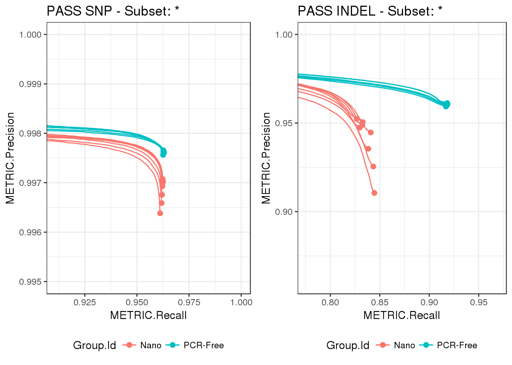
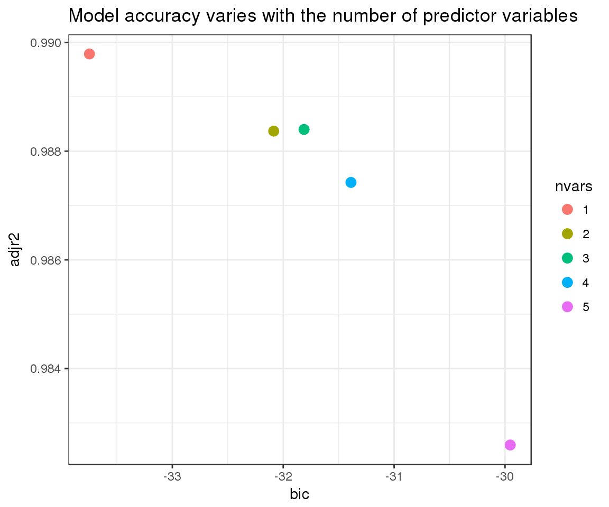
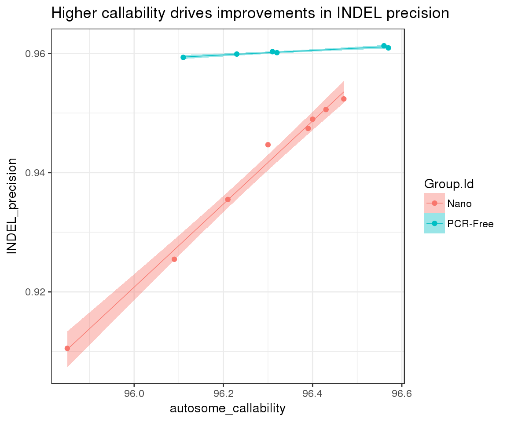

Often we have additional information about our samples besides the results generated with hap.py, e.g. metadata, build metrics, etc. In this vignette we will illustrate how to incorporate custom metrics into our happy_compare object, just by adding an additional build_metrics column to our samplesheet (see extdata/samplesheets/pcrfree_vs_nano.vignettes.csv for an example).
Let’s load our NovaSeq dataset with PCR-Free vs. Nano builds for NA12878, using a samplesheet that includes custom metrics:
# do not run
samplesheet_path <- system.file("extdata/samplesheets", "pcrfree_vs_nano.vignettes.csv",
package = "happyCompare")
happy_compare <- read_samplesheet(samplesheet_path)# load from Rds object
download.file("https://raw.githubusercontent.com/Illumina/happyCompare/master/data-raw/stratified_counts/happy_compare.Rds", "happy_compare.Rds", method = "curl")
happy_compare <- readRDS("happy_compare.Rds")Inspecting the elements of the resulting happy_compare object confirms that build metrics have been successfully imported:
names(happy_compare)## [1] "samplesheet" "happy_results" "build_metrics" "ids"One of the first questions that we can ask given our demo dataset is whether library prep methods have any impact to variant calling performance. ROC curves are a convenient way of visualising accuracy across multiple classification methods (in our case True Positive vs. False Positive calls in PCR-Free vs. Nano builds), and we can quickly produce them from hap.py outputs with hc_plot_roc():
# extract metrics
roc_snvs <- extract_metrics(happy_compare, table = "pr.snp.pass")
roc_indels <- extract_metrics(happy_compare, table = "pr.indel.pass")
# plot precision/recall curves
p1 <- hc_plot_roc(happy_roc = roc_snvs, type = "SNP", filter = "PASS", ylim = c(0.995, 1))
p2 <- hc_plot_roc(happy_roc = roc_indels, type = "INDEL", filter = "PASS")
gridExtra::grid.arrange(p1, p2, ncol = 2)
Note the difference in scales between the two plots, which highlights better performance overall for SNPs, regardless of analysis group. We also see that the differences between PCR-Free and Nano are most accentuated in INDELs, with a wider spread in precision across Nano builds.
Since we have imported build metrics when creating our happy_compare object, we can follow up on the variability seen for INDEL precision in Nano. Let’s start by creating a combined dataset for hap.py and custom metrics:
# link build metrics to hap.py results
summary <- extract_metrics(happy_compare, table = "summary")
build_metrics <- extract_metrics(happy_compare, table = "build.metrics")
merged_df <- summary %>%
filter(Type == "INDEL", Filter == "PASS") %>%
select(happy_prefix, METRIC.Precision) %>%
inner_join(build_metrics)## Joining, by = "happy_prefix"This gives us a large number of metrics to work with:
dim(merged_df)## [1] 14 141From here, we can investigate the relationship between our build metrics and INDEL precision using a linear model. Since we don’t want to make any assumptions on variable importance, let’s use regsubsets() from the leaps package to identify the best predictors:
# clean up metrics dataset and focus on Nano builds for now
subset_df <- merged_df %>%
filter(Group.Id == "Nano") %>%
select_if(function(x) (is.numeric(x) && sum(!is.na(x)) > 0) && n_distinct(x) > 1)
# identify the best model for 1 to nvmax predictors
nvmax <- 5
fit <- leaps::regsubsets(METRIC.Precision ~ ., data = subset_df,
method = "backward", nbest = 1, nvmax = nvmax)
# collect model statistics
fit_stats <- data.frame(
nvars = factor(1:nvmax),
bic = summary(fit)$bic,
adjr2 = summary(fit)$adjr2
) We now have nvmax models, ranging from 1 to nvmax predictor variables. We can assess how much we gain when introducing additional predictors by inspecting model statistics:
fit_stats %>%
ggplot(aes(x = bic, y = adjr2)) +
geom_point(aes(color = nvars), size = 3) +
ggtitle("Model accuracy varies with the number of predictor variables")
From the plot we see that we do a good job at predicting INDEL precision with only one variable, and that adding more information into the model penalises both \(R^2\) and \(BIC\) score. We can learn about our best predictor by inspecting the first model:
stats::coef(fit, 1)## (Intercept) autosome_callability
## -5.76904999 0.06968588Overall, we have managed to identify callability as the main contributor to INDEL precision (in Nano builds). Finally, let’s confirm our predictions by visualising the relationship between these two variables in the full dataset:
merged_df %>%
ggplot(aes(x = autosome_callability, y = METRIC.Precision, group = Group.Id)) +
geom_point(aes(color = Group.Id)) +
geom_smooth(method = "lm", aes(color = Group.Id, fill = Group.Id), lwd = 0.25) +
ylab("INDEL_precision") +
ggtitle("Higher callability drives improvements in INDEL precision")